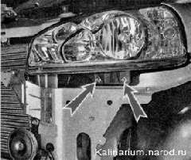

Снятие и установка блок-фарыРабота показана на левой блок- фаре. Снятие правой блок-фары выполняется аналогично. Для удобства работы левой блок-фарой можно снять аккумуляторную батарею, а для работы с правой блок-фарой - бачок омывателя ветрового стекла. Снятие 1. Подготавливаем автомобиль к выполнению работы и отсоединяем клемму провода от отрицательного вывода аккумуляторной батареи. 2. Снимаем передний бампер. 3. Отсоединяем колодку жгута проводов от блок-фары. 4. Отсоединяем колодку провода от патрона лампы указателя поворота. 5. Крестовой отверткой отворачиваем винт 1 и торцовым ключом на 8 мм отворачиваем болт 2 верхнего крепления блок-фары. 6. Придерживая блок-фару, тем же ключом отворачиваем два винта нижнего крепления блок-фары.  7. Снимаем блок-фару. Установка Устанавливаем блок-фару в обратной последовательности. |